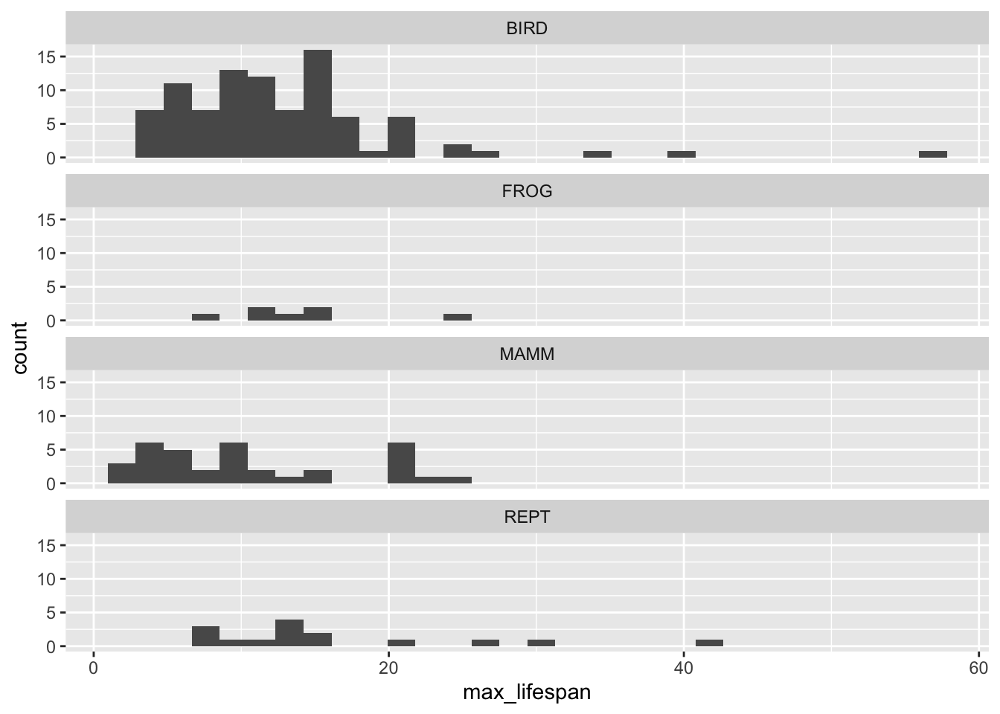

Chapter 3 Reading data and plotting
3.1 Making your own csv file
A csv, stands for comma separated values, is a type of file which can be easily read by R. Most likely, the data you have collected will be in an Exel format. You can make csv’s from your Excel files.
note, Juan tu tienes Excel? me ayudas a hacer la figurita en excel?
3.2 Reading in data
The following dataset contains information on Australia vertebrates. Some of the information it contains is species name, body size, and elevational range.
Before loading this datset, which is in csv format, click on the data called “australian_vertebrates.csv” and then click on View File. This will allow you to see how the file is structured. On the first row you will see the column names and you will see that the values between each column is separated by a comma.
Now we are ready to read in the data.
Note, data origin http://esapubs.org/archive/ecol/E091/181/default.htm#data https://ecologicaldata.org
Juan, should we translate the df to spanish?
australian_verts <- read.csv("data/australian_vertebrates.csv", na.strings = ".")
head(australian_verts)## TAXA SPECIES Common_name mass color_dimorphism max_lifespan endemic
## 1 BIRD Acanthiza katherina Mountain Thornbill 8.9 0 15 1
## 2 BIRD Acanthorhynchus tenuirostris Eastern Spinebill 11.0 1 16 0
## 3 BIRD Accipiter novaehollandiae Grey Goshawk 515.0 0 20 0
## 4 BIRD Ailuroedus melanotis Spotted Catbird 166.0 0 20 0
## 5 BIRD Alcedo azurea Azure Kingfisher 33.8 0 21 0
## 6 BIRD Alcedo pusilla Little Kingfisher 14.5 0 21 03.3 Data frames
The dataset you just loaded is a data frame. A data frame consists of multiple columns and rows. In a data frame, each column has to be the same ‘type’, but not all the columns need to be the same.
3.4 Packages
A package that is very practical and produces beautiful plots is ggplot2. As you recall, a package is a set of functions that are ‘packaged’ together. First you will to instal this package, you only need to install the package once. You can use the following function:
Once you have installed it, you will need to ‘load it’. Loading it makes the functions available for you to use. You will need to load it every time you want to use the functions.
3.5 Bar plots
3.5.1 Do we have more birds or reptiles in our dataset?
In order to answer this question we can plot our data using bar graphs. In a bar graph we have a categorical variable on the x-axis, and the count for each category on the y-axis.
Since we want to count the number of birds and the number of reptiles, we can use a bar graph to visualize this differnece.
3.5.2 Are there more endemic birds in Australia than reptiles?
Based on the previous graph, we can fill the bars depending on the number of endemic species in each taxa. We can easily do that by filling in the bar based on the endemic status.
3.6 Histograms
3.6.1 What is the distribution of life span of Australian vertebrates?
In this question, our variable of interest is life span, which is a continous variable. As a result, we can’t use bar graphs. If we want to see the distribution of a continous variable a useful graph is a histogram.
## `stat_bin()` using `bins = 30`. Pick better value with `binwidth`.Notice that the distribution of life spans is right skewed, meaning that very few species have a long life span, while lots of species have short life spans.
3.7 Stacked histograms and boxplots
3.7.1 Do frogs have a longer life span than reptiles?
In order to answer this question we have to consider the two variables of interest. As in the previous questions, we are interested in the differnet taxa, which is a categorical variable. In addition, we are interested in life span which is a continous variable.
We have two options when we want to plot these data, we can do multiple histograms (i.e. a histogram for every category).
ggplot(data = australian_verts) + geom_histogram(aes(x = max_lifespan)) + facet_wrap(~TAXA, ncol =1)## `stat_bin()` using `bins = 30`. Pick better value with `binwidth`.
Another option for this combination of variables is a box plot. A box plot shows the categories on the x-axis, and the distribution of the data on the y-axis. The centre of the boxplot represents the median and the box shows the 1st and 3rd quantiles.
3.8 Scatterplots
3.8.1 Do larger vertebrates have a longer life span?
In this case we have two continous variables, the mass of the vertebrate and the life span. Here we can use scatter plots.
As you can see, some vertebrates have a very large mass, up to 40kg!
A better way to visualize this data is to log transform the mass data. Log transformations allow us to visualize data that spans orders of magnitude.